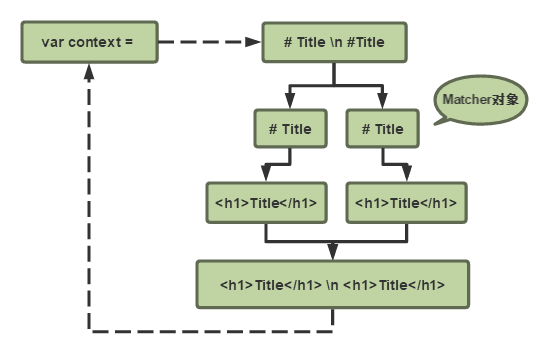

想要用Java实现Markdown解析器，目前只完成了多级标题的解析。其实也就是正则匹配之后替换掉相应内容，程序暂时比较简单，大致流程如下：
按照同样的流程，用Scala来实现该功能，之后也将使用Scala继续完成开发。首先读取文件内容，IO操作参考《Scala Cookbook》，只需一行代码即可：
var srcLines = Source.fromFile(srcFile).getLines().toList
与冗长的Java相比，Scala确实精简了不少。这是之前使用Java读取文件封装的方法：
/**
* 读取文件内容
*
* @param src 读取文件路径
* @return 读取文件内容
*/
private static String readFile(String src) throws IOException {
StringBuffer content = new StringBuffer();
InputStream is = null;
BufferedReader reader = null;
is = new FileInputStream(src);
reader = new BufferedReader(new InputStreamReader(is));
String line = reader.readLine();
while (line != null) {
content.append(line);
content.append("\n");
line = reader.readLine();
}
if (reader != null) {
reader.close();
}
if (is != null) {
is.close();
}
return content.toString();
}
至于Scala版本将字符串改为列表操作的原因在于，Scala和Java在使用正则匹配替换的API上有差异。Java使用Matcher对象进行迭代，Matcher对象拥有查找、替换等方法：
而Scala的Regex对象虽然拥有findAllMatchIn、replaceAllIn等方法，但在find中的对象仅用于查找，replace方法中又无法定位匹配项的内容。因此在Scala中，将文件读入列表，使用如下方式带索引遍历文本内容：
List.range(0, srcLines.size).foreach(index => {
srcLines = srcLines.updated(index, regexReplace)
})
无论是否含有匹配项，循环内都对列表执行一次updated，更新原内容为正则替换后的内容。这样做可能稍微欠妥，关于性能问题将持续关注并整改。可以看到的是，Scala的程序思想与Java典型的OOP确实存在些许差异。
最后关于文件写入，SDK中没有提供专门的操作对象，可使用JDK中的PrintWriter：
val pw = new PrintWriter(new File(outFile))
pw.write(outString)
pw.close()
“Scala是一门会伴随开发者成长的语言”，我将用它完成我的毕业设计。